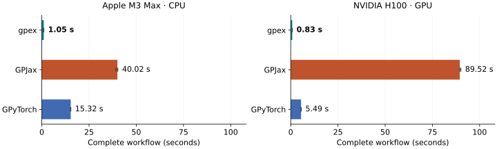

gpex
Gaussian processes for experimental design in JAX.
gpex is a JAX library for Gaussian-process inference from values, derivatives, and other linear measurements. Combine different measurement types in one model, then predict the quantities you care about from the same posterior.
It is built for experimental design and Bayesian optimization involving a scalar latent function. gpex provides the posterior operations; you choose the acquisition strategy and experiment loop.
Get started Tutorials API reference
Alpha status
The mathematical model and core inference paths are implemented and tested. The package is still pre-1.0, so public names may change before the first stable release.
Key features
Efficient sequential updates
Update your GP as new observations arrive, reusing previous computations and reducing JAX compilation overhead.
Linear operators
Combine linear measurements in one GP and use it to predict linear transformations of the latent function.
Differentiable design
Fully differentiable conditioning for gradient-based optimization of experimental design.
Adding observations to an existing posterior
In JAX, growing a Cholesky factor changes array shapes and can trigger recompilation, even when the update itself is efficient. gpex combines Cholesky updates with reserved capacity so fixed-size observation batches can reuse compiled code.
Start with 512 observations, then add 512 more and predict after every update. gpex completes this workflow 38× faster than GPJax and 15× faster than GPyTorch on CPU, and 108× and 6.6× faster on the H100.

Float64, fixed hyperparameters, one prediction point per update. Times include initial conditioning and compilation, with numerical libraries initialized before timing. Bars show medians of three processes, with min–max ranges. Full benchmark and setup.
View the GP posterior through linear operators
Observe values, slopes, or local averages, and see how each informs all three predictions.
Enable JavaScript to explore the interactive example.
Function
Derivative
Local average
Click a plot to take that kind of measurement. Drag a marker below the plots to move one.
Measurements come from a fixed example function. Each dashed line shows the corresponding reference quantity. Averages cover a window of width 0.9. The shaded bands describe uncertainty in the predicted quantities, excluding observation noise. See the same ideas in Python →
About this example
This small browser demo uses a zero-mean RBF GP with unit variance and lengthscale. Observation noise variances are 0.015 for values, 0.035 for slopes, and 0.01 for averages. Averages use an eight-point midpoint rule. Measurements are evaluations of the example function without added random noise. Moving a marker takes a new measurement at that position. The browser implements this fixed example in JavaScript. The gpex library runs in Python with JAX.
Fit a model with values and predict the gradient
Condition on three function values, then predict gradients between those
measurements. ObservationBlock.from_arrays creates the observation block
directly from location and value arrays:
import jax
import jax.numpy as jnp
jax.config.update("jax_enable_x64", True)
import gpex as gpx
from gpex.operators import Identity, Gradient
x_obs = jnp.array([[-1.0], [0.0], [1.0]])
y = jnp.array([-0.8, 0.0, 0.8])
observations = gpx.FunctionalDataset([
gpx.ObservationBlock.from_arrays(x_obs, y, operator=Identity(), variance=0.01, name="values")
])
gp = gpx.GaussianProcess(gpx.kernels.RBFKernel(lengthscale=0.7))
posterior = gp.condition(observations)
x_query = jnp.linspace(-1.0, 1.0, 51)[:, None]
query = gpx.FunctionalQuery([
gpx.FunctionalBlock(x_query, operator=Gradient(), name="gradient"),
])
gradient_mean = posterior.predict_mean(query)["gradient"] # shape (51, 1)
variance is the observation noise variance. The
getting-started guide explains the array shapes and
returned predictions step by step. For the mathematics behind combining
measurement types, see Gaussian processes with linear functionals
and the available operators.
Kernel and noise parameters can also be learned with maximum likelihood (MLE) or maximum a posteriori (MAP) fitting.
Related libraries
The choice depends on the model and workflow you need:
| Library | Framework | A useful choice when you need… |
|---|---|---|
| gpex | JAX | Mixed linear measurements, differentiable design, and sequential inference that reuses compiled code and posterior factors within a fixed capacity. |
| GPJax | JAX | A range of GP models and likelihoods, including classification and sparse variational inference. |
| GPyTorch | PyTorch | Scalable exact and variational GP inference, multitask models, or neural-network integration. |
| BoTorch | PyTorch | A Bayesian-optimization toolkit with built-in acquisition functions and acquisition optimizers. |
gpex and GPJax both benefit from JAX's compiled execution. For small sequential experiments, however, compiling for each new dataset size can dominate the work. gpex's reserved observation blocks let the same compiled conditioning and update functions serve successive experiment steps. Choose capacity for the planned experiment, since reserved slots also cost memory and computation.